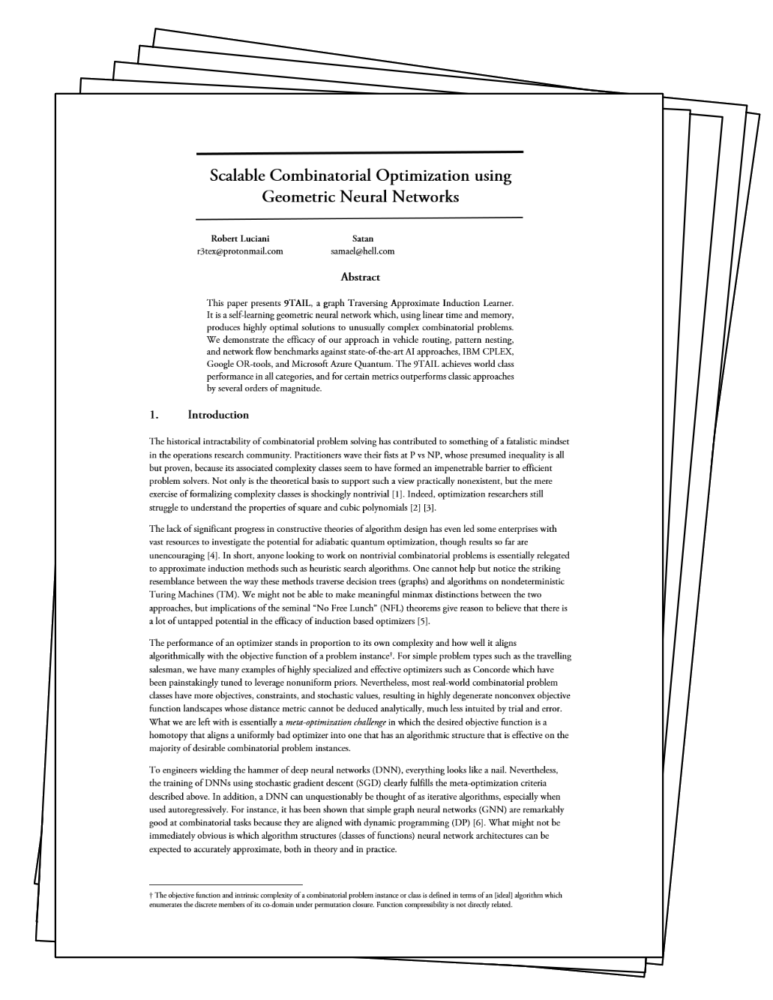

Presenting
The world's fastest and most efficient AI for combinatorial optimization.

FAQ - For Business People
Optimization is one of the few disciplines that can both raise services levels while saving money.
The amount of potential savings is a function of your current operational (in)efficiency.
We've seen logistics companies with high degrees of automation spend 40% more than necessary for a given service level because they insist on a warehouse strategy that unnecessarily constrains delivery schedules.
We don't consider the type of optimizers built into ERP systems to be in the same ballpark.
If you're serious about rationalizing operational costs then you presumably have operations researchers working with industry leading tools such as IBM CP Optimizer or even developing in-house optimizers.
Compared to these legacy approaches, our AI is faster, less expensive to run, more flexible, and has unique capabilities such as multi-objective optimization.
Currently the optimizer is a command-line tool with no graphical user interface.
If this is prohibitive and your company does not employ programmers, we might be able to assist with things like coding a plugin for Autodesk, a warehouse management system, or an HR tool. Please contact us for availability.
In simple terms, problems where you can make discrete choices.
For example, ideal problems involve choosing what customers to deliver to, personell to schedule, or machine to use. Examples of non-ideal problems involve "smooth" choices such as how much to adjust prices or where to cut a piece of wood.
Nevertheless, even these problems can sometimes be discretized or reformulated into something graph-like that our optimizer can work with.
FAQ - For Scientists / Engineers
9TAIL is a geometric transformer DNN written in the Julia language.
The solution begins its optimization procedure by reducing the problem into a mutable decision tree (graph).
Using linear time and memory it traverses the data structure autoregressively using Monte-Carlo evaluation guided by a value network trained to predict optimality and conditioned on multi-objective priorities.
The model works well on multiple combinatorial problem classes, not just ones that are visually graph-like, and also benefits from transfer learning.
Strictly speaking, P vs NP is still conjecture
, not that it has much bearing on how things actually work.
The simplex method is effective precisely because in practice the distribution of problem-instance complexity is highly non-uniform [Spielman].
The main issue is that although real-world objective functions are highly compressible, the distance metric of their degenerate nonconvex landscapes is practically impossible to deduce analytically, much less intuited through trial and error.
This is where ML provides a solution, because training a neural network is in essence a homotopy that aligns a uniformly bad optimizer (i.e. randiomly initialized) into one with an algorithmic structure that is effective on the majority of desirable combinatorial problem instances -
or as [Wolpert] might describe it, with a large inner product. Ultimately, you can't really argue with our benchmarks, so there's that as well.
Contact us for results in business applications!
For scientific results, the only thing worth showing are comprehensive and structured ablation tests across numerous problem classes,
all of which are absurdly boring and time-consuming to set up correctly.
Whereas professors offload this stuff to grad-students, I simply haven't taken the time to do the requisite work.
Perhaps in 2022 I'll get around to publishing results, maybe together with some collaborators, or perhaps not.
If you're salty about it then give yourself a pat on the back! <3